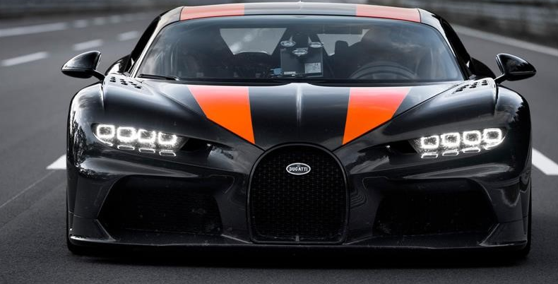
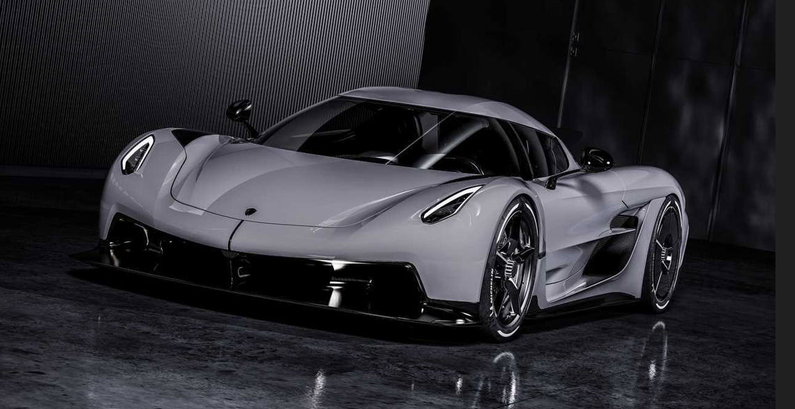
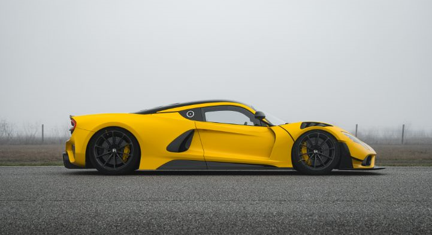

Maquinas veloces
Hola, aqui les hablare de algunos de los autos mas veloces del mundo y su maxima velocidad, objetos construidos para sentir la velocidad desde que te subes en ellos.
Bugatti Chiron Super Sport 300+ – 483 km/h.

Koenigsegg Jesko Absolut – 531 km/h

Bugatti Bolide – 499 km/h.
Hennessey Venom F5 – 499 km/h.

Volver a la pagina principal: